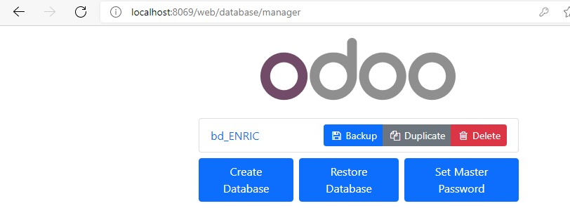

Para hacer un backup hay que poner la url que se ve en la imagen, que es: web/database/manager. Despues de esto hay que darle a backup y con eso ya tendriamos el backup, luego este archivo backup se lo podemos enviar a alguien y esa persona podria restaurarlo mediante el boton de Restore Database y aqui dentro meter el archivo.
